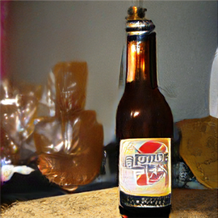
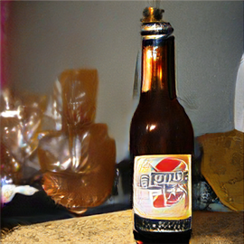
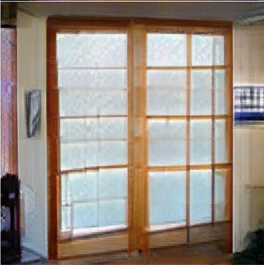
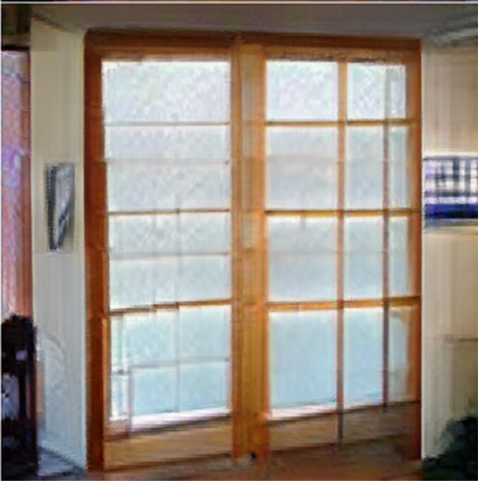

 



Analog Clock >>
This is an analog clock. The display is not just for looks - a digital clock just sends a binary number directly to the cell, so you could probably display a meaningful value there. In fact, I think I read about a clock that did this a while back. That's the only difference between this clock and a normal clock. It isn't a fancy clock, and doesn't have a specific function other than a fancy clock.
Beer Bottle >>
This is a beer bottle. On the outside it is the color of this bottle. On the inside, it is the color of this beer. Imported by Hoppy Brewing Co..
Beer Glass >>
This is a beer glass. All beer glasses are one-of-a-kind, but some more than others. The shape and size are usually set by a manufacturer with a good eye for design, so those giant glass Old-Fashioned glasses I’ve never seen anyone ever drink from, but they serve their purpose as a beautiful decorative piece on the wall.
Cup >>
This is a cup. Many of you may already know that. However, some of you do not. This is a cup that was created, not by a master ceramist, but by a formless vessel. Once formed, it has now been saved. Its unique shape and design have just been too valuable to discard.
Dining Table >>
This is a dining table. When it was made in 1697, it was the latest thing. It is 20 feet long, made of walnut and silver, with a dashing, dragon-harpoon-fighting prow at the front. It took the finest craftsmen four years to make, but the price, to a poor indentured servant, was eight shillings, one farthing.
Doormat >>
This is a doormat. For reasons unknown, in our own home it is never kept indoors. It goes out and stays there. Our doormat is most often found by the front door. Why it is always there at the front door, I do not know.
Electric Fan >>
This is an electric fan. It's one of those ones where you can open the door and stand in front of it to blow air on your face, even in the winter, with the cold air blowing straight up your nose. Do you remember these from your childhood? We spent every weekend of the summer at my grandparent's home when I was growing up. There were no central air conditioning, just this fan in the dining room.
Lamp >>
See this lamp... it was my first lamp. Yes, I know that the golden shade is only covering the fixture. That was once a fun - looking lamp too. But not now. The color is gone. There is something that is totally off about it. And no, it's not the plastic. It's not the plastic that's peeling off the stem. Oh no.
Mousetrap >>
This is a mousetrap. It uses a magnetized ratchet catch to snap a rat's claws together, causing them to tear its paw apart and eventually the rodent to die. However, unlike the classic MSP traps, this trap doesn't use a chemical compound, killing the rodent instead.
Pillow >>
This is a pillow. You know those snuggly cozy fluffy pillows that come with the mattress in the hotel rooms and you get so desperate to take a nap, you pop one of those suckers in between your back and the mattress and drift off to sleep like the weight of the world is resting on your shoulders.
Saltshaker >>
This is a saltshaker. You can also fill it with a sand or, in some fancy and fanciful examples, some flour. This particular salt shaker is a bit larger than the usual variety—not tall, but rather wide and flat. All the same, it's nothing special, you probably know it by now.
Shoji >>
This is a shoji. It’s a type of sliding door. Although it’s a stereotype of Japanese design, they are extremely common in Japan and are used extensively. Shoji, whose etymology is a very happy one for a final word on this project, is one of the ways that Westerners can learn about Japanese aesthetics.
Studio Couch >>
This is a studio couch. It's not a pull-out, it's not a lightweight folding couch, it's the kind of couch you might actually want to sit on all afternoon. I know, because it was delivered to my house the day after I wrote this post. Yes, this particular piece of furniture was too cool not to post about.
Switch >>
This is an electric switch. It is highly secure, and can be opened or closed by an integrated circuit. If you ever find yourself needing to change the password on an electric device, get the security device right here.
Teddy Bear >>
This is a teddy bear. I never thought I would be lucky enough to get this bear. It came to me in a fluke. I was lucky enough to find him on the street. I don't know who he belonged to. He is in bad shape with holes in him. I will fix him up and maybe send him to a good home. I am torn, but a home with no kids... no wait kids. I guess I will keep him.
Wall Clock >>
This is a wall clock. A cuckoo clock, a cuckoo clock. You know the ones; they're like the bellpull designs that someone made a clock out of. Except this is different: it's an old fashioned clock. It's from another time. A very, very long time ago. I know this because it has six figures carved into the front.